Candidate List 20260109Previous Day Next Day
Section 1: New Sources (age<1d) Section 2: Old (1-5d) sources observed last nightplaceholder
Section 1: New Afterglow/FBOT Cands Last Night (5)
1. ZTF26aaaaary (FBOT?) [Back to Top] [Share] [Trigger Swift] [Fritz] [Lasair]RA, Dec: 0.7172, 13.09497 0h 2m52.13s, 13d 5m41.89sGalactic (l, b): 105.07255, -48.08542 ext(g-r) = 0.089


TESS: Sectors [42 43 83]
SDSS (10 arcsec):Found SDSS phot-z: z=0.03; peak abs mag = -19.73
PS1: 0 sources in 3 arcsec
LegacySurvey: 1 sources in 3 arcsec Closest: d = 5.17 arcsec, 8.0 deg (east of north) photoz=0.03 (68% bounds 0.02, 0.03), type=SER peak abs mag = -19.29 (68% bounds -18.87, -19.7)

Extinction-corrected gr color:
From alerts: -0.13 +/- 0.03 mag
Rise Rate:
g: 0.24 mag/day
r: 0.23 mag/day
i: -99 mag/day
Fade Rate:
g: -99 mag/day
r: -99 mag/day
i: -99 mag/day
2. ZTF26aaachld (FBOT?) [Back to Top] [Share] [Trigger Swift] [Fritz] [Lasair]RA, Dec: 144.71711, 60.9291 9h38m52.11s, 60d55m44.77sGalactic (l, b): 152.80556, 43.4007 ext(g-r) = 0.029


TESS: Sectors [21 47 74]
SDSS (10 arcsec):Found SDSS phot-z: z=0.09; peak abs mag = -19.82
PS1: 0 sources in 3 arcsec
LegacySurvey: 1 sources in 3 arcsec Closest: d = 1.25 arcsec, 105.5 deg (east of north) photoz=0.09 (68% bounds 0.05, 0.14), type=REX peak abs mag = -19.54 (68% bounds -18.48, -20.58)
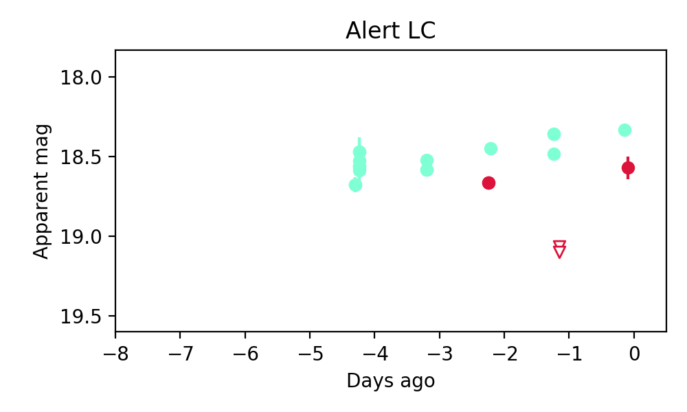
Rise Rate:
g: 2.54 mag/day
r: -99 mag/day
i: -99 mag/day
Fade Rate:
g: -99 mag/day
r: -99 mag/day
i: -99 mag/day
3. ZTF26aaacwjf (Afterglow?) [Back to Top] [Share] [Trigger Swift] [Fritz] [Lasair]RA, Dec: 173.74723, 63.66547 11h34m59.33s, 63d39m55.70sGalactic (l, b): 136.39983, 51.41723 ext(g-r) = 0.025 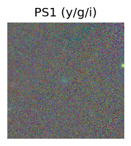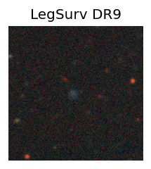
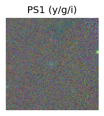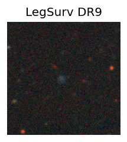
TESS: Sectors [14 15 21 41 48 75]
SDSS (10 arcsec):Found SDSS phot-z: z=0.84; peak abs mag = -25.37
PS1: 0 sources in 3 arcsec
LegacySurvey: 1 sources in 3 arcsec Closest: d = 1.31 arcsec, 108.4 deg (east of north) photoz=0.07 (68% bounds 0.03, 0.12), type=REX peak abs mag = -19.31 (68% bounds -17.19, -20.41)
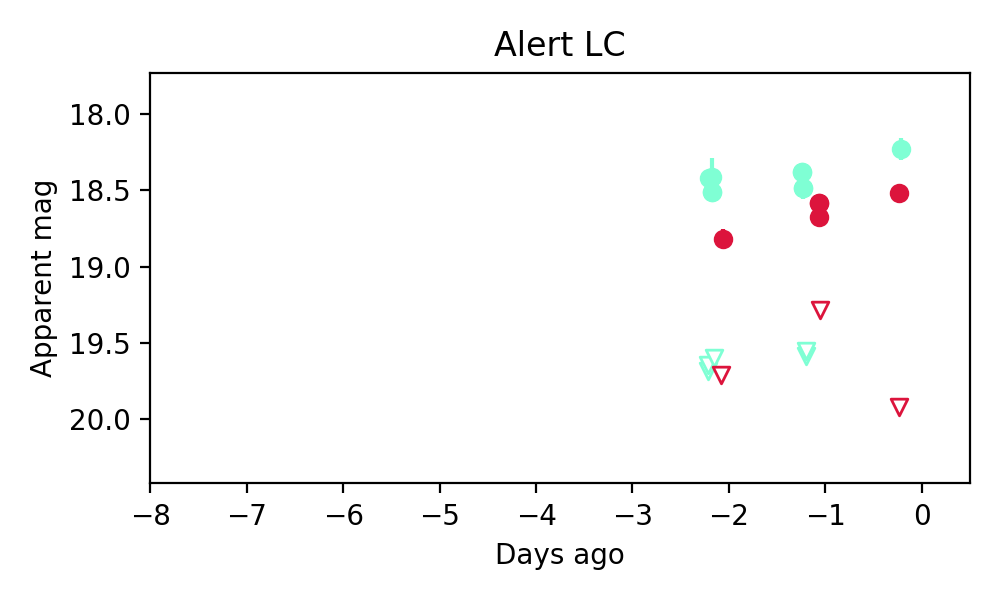
Extinction-corrected gr color:
From alerts: -0.29 +/- 0.12 mag
Rise Rate:
g: 33.07 mag/day
r: 45.62 mag/day
i: -99 mag/day
Fade Rate:
g: 58.46 mag/day
r: -99 mag/day
i: -99 mag/day
4. ZTF26aaacwmd (FBOT?) [Back to Top] [Share] [Trigger Swift] [Fritz] [Lasair]RA, Dec: 162.44027, 60.47681 10h49m45.66s, 60d28m36.51sGalactic (l, b): 146.18456, 50.80238 ext(g-r) = 0.01 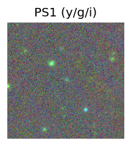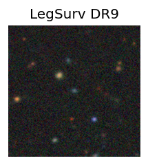
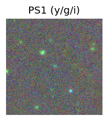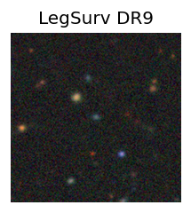
TESS: Sectors [ 14 21 48 75 120]
SDSS (10 arcsec):Found SDSS phot-z: z=0.28; peak abs mag = -22.47
PS1: 0 sources in 3 arcsec
LegacySurvey: 1 sources in 3 arcsec Closest: d = 0.11 arcsec, 301.3 deg (east of north) photoz=0.18 (68% bounds 0.13, 0.26), type=EXP peak abs mag = -21.33 (68% bounds -20.6, -22.21)
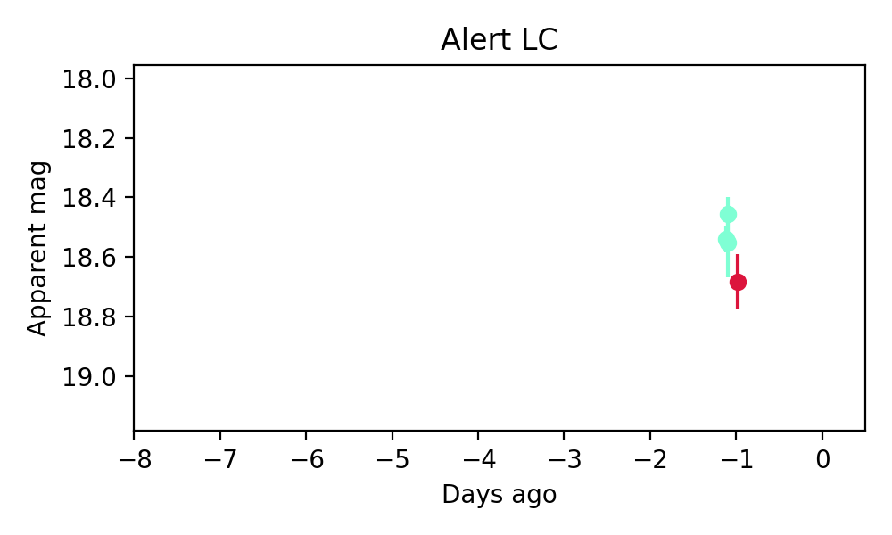
Extinction-corrected gr color:
From alerts: -0.18 +/- 0.1 mag
Rise Rate:
g: 0.2 mag/day
r: 0.19 mag/day
i: -99 mag/day
Fade Rate:
g: -99 mag/day
r: -99 mag/day
i: -99 mag/day
5. ZTF26aaadfzz (Afterglow?) [Back to Top] [Share] [Trigger Swift] [Fritz] [Lasair]RA, Dec: 185.65448, 53.91869 12h22m37.07s, 53d55m7.28sGalactic (l, b): 132.19581, 62.68814 ext(g-r) = 0.022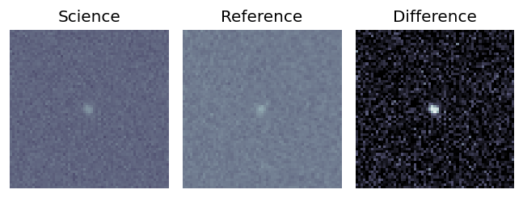

TESS: Sectors [ 15 22 48 49 75 76 120 121]
SDSS (10 arcsec):Found SDSS phot-z: z=0.13; peak abs mag = -19.98
PS1: 0 sources in 3 arcsec
LegacySurvey: 1 sources in 3 arcsec Closest: d = 0.08 arcsec, 141.0 deg (east of north) photoz=0.17 (68% bounds 0.12, 0.2), type=EXP peak abs mag = -20.52 (68% bounds -19.74, -20.94)

Extinction-corrected gr color:
From alerts: -0.08 +/- 0.1 mag
Consistent with synchrotron, g-r>0!
Rise Rate:
g: 0.13 mag/day
r: 0.12 mag/day
i: -99 mag/day
Fade Rate:
g: 6.47 mag/day
r: -99 mag/day
i: -99 mag/day